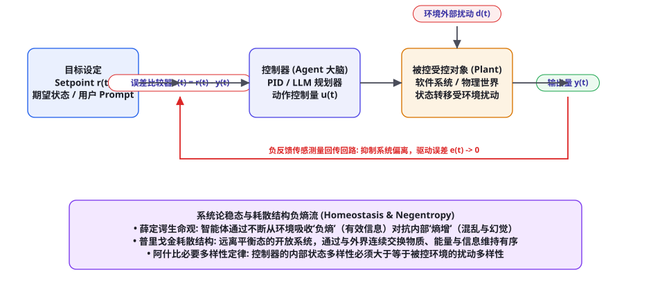
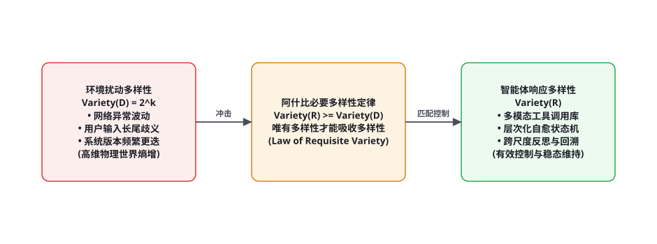

<!DOCTYPE html>
<html lang="zh-CN">
<head>
<meta charset="UTF-8">
<meta name="viewport" content="width=device-width, initial-scale=1.0">
<title>第 92 章 · 控制论与系统论：反馈控制、自适应与负熵 — AI Agent Cookbook</title>
<link rel="stylesheet" href="../assets/css/style.css">
</head>
<body>
<div id="progress"></div>

<aside class="sidebar">
  <div class="sidebar-head">
    <a class="logo-row" href="../index.html">
      <span class="logo-mark">AC</span>
      <span class="t">AI Agent Cookbook<span class="s">从入门到精通的智能体全景手册</span></span>
    </a>
    <div class="search-wrap">
      <span class="icon">🔍</span>
      <input id="searchInput" type="text" placeholder="搜索全书…" autocomplete="off">
      <kbd>/</kbd>
      <div id="searchResults" class="search-results"></div>
    </div>
  </div>
  <div class="toc-part"><div class="toc-part-head"><span class="num">0</span>导论<span class="chev">▶</span></div><div class="toc-part-body"><a href="chapters/ch001.html"><span class="cn">001</span>前言：为什么是 Agent，为什么是现在</a><a href="chapters/ch002.html"><span class="cn">002</span>如何使用本书：三条学习路径与阅读指南</a><a href="chapters/ch003.html"><span class="cn">003</span>Agent 通识：定义、心智模型与七十年简史</a></div></div><div class="toc-part"><div class="toc-part-head"><span class="num">1</span>基础篇：LLM 与提示工程<span class="chev">▶</span></div><div class="toc-part-body"><a href="chapters/ch004.html"><span class="cn">004</span>LLM 工作原理速成：Transformer 与注意力机制</a><a href="chapters/ch005.html"><span class="cn">005</span>Token、上下文窗口与采样策略</a><a href="chapters/ch006.html"><span class="cn">006</span>Prompt Engineering 系统指南</a><a href="chapters/ch007.html"><span class="cn">007</span>提示工程进阶：提示链、自洽性与元提示</a><a href="chapters/ch008.html"><span class="cn">008</span>结构化输出：JSON Mode、Schema 与受约束解码</a><a href="chapters/ch009.html"><span class="cn">009</span>LLM 的能力边界：幻觉、知识与推理局限</a><a href="chapters/ch010.html"><span class="cn">010</span>Embedding 与向量空间基础</a><a href="chapters/ch011.html"><span class="cn">011</span>开发环境与 SDK 速览：OpenAI / Anthropic / 开源模型</a><a href="chapters/ch012.html"><span class="cn">012</span>API 工程实践：重试、限流、成本与流式</a><a href="chapters/ch013.html"><span class="cn">013</span>评测思维入门：科学地度量 LLM 输出</a></div></div><div class="toc-part"><div class="toc-part-head"><span class="num">2</span>核心机制篇<span class="chev">▶</span></div><div class="toc-part-body"><a href="chapters/ch014.html"><span class="cn">014</span>什么是 Agent：自主性光谱与感知-决策-行动</a><a href="chapters/ch015.html"><span class="cn">015</span>Agent Loop：大模型 Agent 的心脏</a><a href="chapters/ch016.html"><span class="cn">016</span>ReAct：推理与行动的交织范式</a><a href="chapters/ch017.html"><span class="cn">017</span>工具调用全景：从 Function Calling 到并行编排</a><a href="chapters/ch018.html"><span class="cn">018</span>规划机制：任务分解、Plan-and-Execute 与树搜索</a><a href="chapters/ch019.html"><span class="cn">019</span>记忆系统：短期、长期、情景与语义</a><a href="chapters/ch020.html"><span class="cn">020</span>RAG 从入门到进阶：分块、索引、检索与重排</a><a href="chapters/ch021.html"><span class="cn">021</span>RAG 进阶：HyDE、Self-RAG、GraphRAG 与 Agentic RAG</a><a href="chapters/ch022.html"><span class="cn">022</span>反思与自我改进：Reflexion、Self-Refine 与 Critic 模式</a><a href="chapters/ch023.html"><span class="cn">023</span>上下文工程：Context Engineering 的艺术</a><a href="chapters/ch024.html"><span class="cn">024</span>多 Agent 系统：拓扑、协作协议与角色分工</a><a href="chapters/ch025.html"><span class="cn">025</span>人机协同：审批、中断与恢复</a></div></div><div class="toc-part"><div class="toc-part-head"><span class="num">3</span>工程与框架篇<span class="chev">▶</span></div><div class="toc-part-body"><a href="chapters/ch026.html"><span class="cn">026</span>Agent 技术栈总览与选型决策树</a><a href="chapters/ch027.html"><span class="cn">027</span>从零手写最小 Agent：200 行 Python 的完整实现</a><a href="chapters/ch028.html"><span class="cn">028</span>LangChain 与 LangGraph 深度实战</a><a href="chapters/ch029.html"><span class="cn">029</span>OpenAI Agents SDK 与 Responses API</a><a href="chapters/ch030.html"><span class="cn">030</span>Claude Agent SDK 与 Claude Code 剖析</a><a href="chapters/ch031.html"><span class="cn">031</span>AutoGen / AG2：群聊式多智能体框架</a><a href="chapters/ch032.html"><span class="cn">032</span>CrewAI：角色驱动的多 Agent 团队</a><a href="chapters/ch033.html"><span class="cn">033</span>MetaGPT：软件公司隐喻与 SOP 多智能体</a><a href="chapters/ch034.html"><span class="cn">034</span>LlamaIndex：数据框架与 Agent 融合</a><a href="chapters/ch035.html"><span class="cn">035</span>低代码平台：Dify、Coze、n8n 与 Flowise</a><a href="chapters/ch036.html"><span class="cn">036</span>MCP：Model Context Protocol 详解与生态</a><a href="chapters/ch037.html"><span class="cn">037</span>Agent 互操作协议：A2A、AG-UI 与开放生态</a></div></div><div class="toc-part"><div class="toc-part-head"><span class="num">4</span>训练与强化篇<span class="chev">▶</span></div><div class="toc-part-body"><a href="chapters/ch038.html"><span class="cn">038</span>训练全景图：预训练 → SFT → RLHF → Agent 训练</a><a href="chapters/ch039.html"><span class="cn">039</span>SFT 指令微调实操：数据构建与 LoRA/QLoRA</a><a href="chapters/ch040.html"><span class="cn">040</span>RLHF 与 PPO：三阶段详解</a><a href="chapters/ch041.html"><span class="cn">041</span>DPO 及变体：IPO、KTO、SimPO、ORPO</a><a href="chapters/ch042.html"><span class="cn">042</span>RLAIF、Constitutional AI 与自我奖励</a><a href="chapters/ch043.html"><span class="cn">043</span>RLVR：可验证奖励的强化学习与推理范式</a><a href="chapters/ch044.html"><span class="cn">044</span>工具使用训练：Toolformer、Gorilla 与 ToolRL</a><a href="chapters/ch045.html"><span class="cn">045</span>Agent RL：WebRL、AgentGym、AgentTuning 与进化式训练</a><a href="chapters/ch046.html"><span class="cn">046</span>过程奖励与结果奖励：PRM、ORM 与奖励设计</a><a href="chapters/ch047.html"><span class="cn">047</span>合成数据工程：Self-Instruct、Evol-Instruct 与数据飞轮</a><a href="chapters/ch048.html"><span class="cn">048</span>蒸馏与小型化：让小模型拥有 Agentic 能力</a><a href="chapters/ch049.html"><span class="cn">049</span>Self-Play 与持续学习：Agent 的自我进化</a></div></div><div class="toc-part"><div class="toc-part-head"><span class="num">5</span>评测基准篇<span class="chev">▶</span></div><div class="toc-part-body"><a href="chapters/ch050.html"><span class="cn">050</span>Agent 评测方法论：静态到动态、过程到结果</a><a href="chapters/ch051.html"><span class="cn">051</span>代码 Agent 基准：SWE-bench 家族与 LiveCodeBench</a><a href="chapters/ch052.html"><span class="cn">052</span>Web 与 Computer-Use 基准：WebArena、OSWorld、Mind2Web</a><a href="chapters/ch053.html"><span class="cn">053</span>通用 Agent 基准：GAIA、AgentBench、τ-bench 与 BrowseComp</a><a href="chapters/ch054.html"><span class="cn">054</span>工具调用评测：BFCL、ToolSandbox 与 StableToolBench</a><a href="chapters/ch055.html"><span class="cn">055</span>安全评测：注入攻击基准与自动化红队</a><a href="chapters/ch056.html"><span class="cn">056</span>构建你自己的评测：沙箱、容器化与 CI 集成</a><a href="chapters/ch057.html"><span class="cn">057</span>LLM-as-Judge 与评测的可信度</a></div></div><div class="toc-part"><div class="toc-part-head"><span class="num">6</span>安全与对齐篇<span class="chev">▶</span></div><div class="toc-part-body"><a href="chapters/ch058.html"><span class="cn">058</span>Agent 威胁模型：攻击面全景</a><a href="chapters/ch059.html"><span class="cn">059</span>Prompt Injection 攻防：直接注入、间接注入与防线</a><a href="chapters/ch060.html"><span class="cn">060</span>权限与沙箱：最小权限、能力模型与执行隔离</a><a href="chapters/ch061.html"><span class="cn">061</span>数据外泄与供应链安全</a><a href="chapters/ch062.html"><span class="cn">062</span>越狱与滥用防治</a><a href="chapters/ch063.html"><span class="cn">063</span>幻觉治理与事实性工程</a><a href="chapters/ch064.html"><span class="cn">064</span>对齐与价值观：从 RLHF 到宪政 AI 的落地</a><a href="chapters/ch065.html"><span class="cn">065</span>治理、合规与责任：AI Act 时代的 Agent 运营</a></div></div><div class="toc-part"><div class="toc-part-head"><span class="num">7</span>多模态与具身篇<span class="chev">▶</span></div><div class="toc-part-body"><a href="chapters/ch066.html"><span class="cn">066</span>视觉语言模型与多模态 Agent 基础</a><a href="chapters/ch067.html"><span class="cn">067</span>GUI Agent：从 WebVoyager 到 Computer Use</a><a href="chapters/ch068.html"><span class="cn">068</span>移动与操作系统 Agent：AppAgent 与 OS-Copilot</a><a href="chapters/ch069.html"><span class="cn">069</span>具身智能导览：RT-2、PaLM-E 与 VLA 模型</a><a href="chapters/ch070.html"><span class="cn">070</span>游戏与仿真 Agent：MineDojo、Voyager 与 Genie</a><a href="chapters/ch071.html"><span class="cn">071</span>科学发现 Agent：Coscientist、ChemCrow 与 AI Scientist</a><a href="chapters/ch072.html"><span class="cn">072</span>语音 Agent 与实时多模态交互</a></div></div><div class="toc-part"><div class="toc-part-head"><span class="num">8</span>前沿专题篇<span class="chev">▶</span></div><div class="toc-part-body"><a href="chapters/ch073.html"><span class="cn">073</span>Deep Research：深度研究 Agent 架构解密</a><a href="chapters/ch074.html"><span class="cn">074</span>Coding Agent：从 Copilot 到 Devin 再到 Claude Code</a><a href="chapters/ch075.html"><span class="cn">075</span>Computer Use 与 Browser Use 前沿</a><a href="chapters/ch076.html"><span class="cn">076</span>长时程 Agent：小时级任务、压缩与 Checkpointing</a><a href="chapters/ch077.html"><span class="cn">077</span>World Models：Agent 的世界理解与想象</a><a href="chapters/ch078.html"><span class="cn">078</span>Agent 经济学：成本、延迟与质量的权衡</a><a href="chapters/ch079.html"><span class="cn">079</span>可观测性：Tracing、Eval 与监控</a><a href="chapters/ch080.html"><span class="cn">080</span>Agent 系统规模化：队列、并发与可靠性</a></div></div><div class="toc-part"><div class="toc-part-head"><span class="num">9</span>实战项目篇<span class="chev">▶</span></div><div class="toc-part-body"><a href="chapters/ch081.html"><span class="cn">081</span>项目 1：个人知识库问答 Agent（RAG 全流程）</a><a href="chapters/ch082.html"><span class="cn">082</span>项目 2：自动化数据分析师 Agent</a><a href="chapters/ch083.html"><span class="cn">083</span>项目 3：复刻 Deep Research 研究助手</a><a href="chapters/ch084.html"><span class="cn">084</span>项目 4：浏览器自动化 Agent</a><a href="chapters/ch085.html"><span class="cn">085</span>项目 5：代码审查与修复 Agent</a><a href="chapters/ch086.html"><span class="cn">086</span>项目 6：多 Agent 内容工厂</a><a href="chapters/ch087.html"><span class="cn">087</span>项目 7：客服工单 Agent（含人工升级）</a><a href="chapters/ch088.html"><span class="cn">088</span>项目 8：本地化 Agent（Ollama + 端侧模型）</a><a href="chapters/ch089.html"><span class="cn">089</span>生产化：部署、网关、缓存与成本控制</a><a href="chapters/ch090.html"><span class="cn">090</span>案例研究：Devin、Manus、Claude Code 与 Cursor 拆解</a></div></div><div class="toc-part"><div class="toc-part-head"><span class="num">10</span>理论基础篇<span class="chev">▶</span></div><div class="toc-part-body"><a href="chapters/ch091.html"><span class="cn">091</span>形式化基础：MDP、POMDP 与 Agent 数学语言</a><a href="chapters/ch092.html"><span class="cn">092</span>LLM 作为策略：In-context RL 与序列建模视角</a><a href="chapters/ch093.html"><span class="cn">093</span>搜索算法：从 BFS/A* 到 MCTS 与 LLM 结合</a><a href="chapters/ch094.html"><span class="cn">094</span>规划理论：经典规划、HTN 与 LLM+P</a><a href="chapters/ch095.html"><span class="cn">095</span>经典 Agent 理论：BDI、Soar、ACT-R 的遗产</a><a href="chapters/ch096.html"><span class="cn">096</span>概率与决策：贝叶斯视角与多臂老虎机</a><a href="chapters/ch097.html"><span class="cn">097</span>世界模型与生成式仿真</a><a href="chapters/ch098.html"><span class="cn">098</span>涌现、Scaling Laws 与 Agent 的未来能力</a></div></div><div class="toc-part"><div class="toc-part-head"><span class="num">11</span>论文库篇<span class="chev">▶</span></div><div class="toc-part-body"><a href="chapters/ch099.html"><span class="cn">099</span>论文阅读方法论：如何高效读 Agent 论文</a><a href="chapters/ch100.html"><span class="cn">100</span>奠基论文精读十篇</a><a href="chapters/ch101.html"><span class="cn">101</span>核心机制论文地图：记忆、RAG、规划与多智能体</a><a href="chapters/ch102.html"><span class="cn">102</span>训练与强化论文地图</a><a href="chapters/ch103.html"><span class="cn">103</span>评测与安全论文地图</a><a href="chapters/ch104.html"><span class="cn">104</span>2024-2026 前沿论文追踪清单（100 篇）</a></div></div><div class="toc-part"><div class="toc-part-head"><span class="num">12</span>项目与资源库篇<span class="chev">▶</span></div><div class="toc-part-body"><a href="chapters/ch105.html"><span class="cn">105</span>开源框架横评与选型决策树</a><a href="chapters/ch106.html"><span class="cn">106</span>50 个值得 Star 的开源 Agent 项目</a><a href="chapters/ch107.html"><span class="cn">107</span>数据集与基准资源大全</a><a href="chapters/ch108.html"><span class="cn">108</span>学习资源：课程、书籍、博客与社区</a><a href="chapters/ch109.html"><span class="cn">109</span>从本书到 GitHub：贡献指南与扩展路线</a></div></div><div class="toc-part"><div class="toc-part-head"><span class="num">13</span>面试与速查篇<span class="chev">▶</span></div><div class="toc-part-body"><a href="chapters/ch110.html"><span class="cn">110</span>Agent 工程师面试题库：基础 50 题精解</a><a href="chapters/ch111.html"><span class="cn">111</span>Agent 工程师面试题库：进阶 50 题精解</a><a href="chapters/ch112.html"><span class="cn">112</span>系统设计面试：设计 Deep Research / Coding Agent</a><a href="chapters/ch113.html"><span class="cn">113</span>术语表：300 条 Agent 核心术语速查</a></div></div>
  <div class="sidebar-foot">
    <span>v1.0 · 开源书籍</span>
    <button class="theme-toggle">🌙 深色</button>
  </div>
</aside>
<div class="scrim"></div>

<div class="topbar">
  <button class="menu-btn">☰</button>
  <span class="title">AI Agent Cookbook</span>
</div>

<main class="main">
  <div class="content">

    <nav class="crumb">
      <a href="../index.html">首页</a><span class="sep">/</span>
      <a href="../index.html#part-10">第十部分 · 理论篇</a><span class="sep">/</span>
      <span>第 92 章</span>
    </nav>

    <header class="chapter-header">
      <div class="chapter-meta">
        <span class="badge lv-高级">高级</span>
        <span class="badge tag">理论</span>
        <span class="badge tag">控制论</span>
        <span class="badge tag">系统论</span>
        <span class="badge tag">负熵</span>
        <span class="badge">⏱ 约 60 分钟</span>
      </div>
      <h1>第 92 章 · 控制论与系统论：反馈控制、自适应与负熵</h1>
      <p class="lead">从纯粹工程视角看，智能体是一堆由代码和模型组成的软件流水线；但若从二十世纪中叶维纳、贝塔朗菲、阿什比与普里戈金等大师奠定的控制论与系统论高维俯瞰，智能体的本质是一个「远离热力学平衡态、通过持续从外部环境汲取负熵（有效信息）以维持内部动态有序的自组织耗散系统」。本章我们将跳出狭隘的深度学习算子视界，系统性解构经典控制论的闭环负反馈机理、阿什比必要多样性定律对 Agent 架构上限的判定、以及自适应控制与耗散结构理论在解决长程智能体“退化与幻觉熵增”中的决定性启示。</p>
    </header>

    <h2 id="wiener-cybernetics">诺伯特·维纳的控制论视角：一切智能皆为负反馈</h2>

    <figure class="figure">
      
      <figcaption><span class="fig-no">图 92-1</span>控制论闭环负反馈调节机制：目标设定值 $r(t)$ 与测量输出 $y(t)$ 在比较器形成实时动态误差 $e(t)$；控制器（LLM 大脑）根据误差输出控制量 $u(t)$，不断抑制外部不可控环境扰动 $d(t)$，驱使系统维持动态内稳态（Homeostasis）。</figcaption>
    </figure>

    <p>1948 年，数学大师诺伯特·维纳（Norbert Wiener）发表了划时代巨著《控制论：或关于在动物和机器中控制和通信的科学》。维纳提出了一个颠覆传统因果论的宏伟哲学命题：<strong>无论是生物神经系统、机械蒸汽机调速器，还是现代人工智能，一切具备自主目的性的行为，其底层物理机制无一例外都是「负反馈控制（Negative Feedback Control）」</strong>。</p>
    <p>一个经典闭环负反馈系统由以下核心微分关系严格刻画：</p>
    <p><strong>1. 误差比较信号（Error Signal）：</strong></p>
    <p>$$e(t) = r(t) - y(t)$$</p>
    <p>其中 $r(t)$ 为期望的目标状态（用户在 Prompt 中提出的目标，如「修复该 GitHub Issue 并使测试全绿」），$y(t)$ 为系统通过传感器测得的当前实际输出（如执行测试后的终端控制台回显）。</p>
    <p><strong>2. 控制器决策生成（Controller Mapping）：</strong></p>
    <p>控制器根据当前的误差历程输出控制作用量：$u(t) = \mathcal{K}(e(t), \int e(\tau)d\tau, \frac{de}{dt})$。在传统工业中，这对应于 PID 控制器；而在 AI Agent 架构中，这对应于大语言模型的推理与反思机制（ReAct / Reflexion）：通过分析错误堆栈，生成针对性的代码补丁或工具参数。</p>
    <p><strong>3. 负反馈的阻尼与收敛性：</strong>正反馈（Positive Feedback）会导致系统走向指数爆炸或崩溃（类似于麦克风靠近音箱时的刺耳啸叫，以及大模型在缺乏外部真实世界验证时的自激幻觉狂欢）；唯有<strong>负反馈</strong>能够产生反向拉扯力，在外界不可预测扰动 $d(t)$（如网络超时、目标网页 DOM 突然变更）的持续冲击下，迫使误差 $e(t) \to 0$，实现系统长程稳态运行。</p>

    <h2 id="ashby-requisite-variety">阿什比必要多样性定律：智能体控制能力的硬约束</h2>

    <figure class="figure">
      
      <figcaption><span class="fig-no">图 92-2</span>阿什比必要多样性定律（Ashby's Law of Requisite Variety）：被控环境的扰动多样性 $\mathcal{V}(D)$ 必须小于等于控制器的响应多样性 $\mathcal{V}(R)$。唯有多样性才能吸收和摧毁多样性（Only variety can absorb variety）。</figcaption>
    </figure>

    <p>控制论大师威廉·罗斯·阿什比（W. Ross Ashby）在 1956 年提出了控制论中最具穿透力的公理化定律——<strong>必要多样性定律（Law of Requisite Variety）</strong>。这一定律直接宣判了许多低级 Agent 架构的死刑：</p>
    
    <div class="callout deep">
      <div class="co-title">🔬 阿什比必要多样性定律的数学形式化（信息论推导）</div>
      <p>设外部环境所能产生的不可控扰动集合为 $\mathcal{D}$，智能体控制器所能采取的调节应对动作集合为 $\mathcal{R}$，最终系统可能落入的结果状态集合为 $\mathcal{E}$。记系统的状态熵（多样性）为 $\mathcal{V}(\cdot)$（即香农熵 $H(\cdot)$）。根据信息论信道容量不等式，系统的最终结果不确定性满足：</p>
      <p>$$\mathcal{V}(\mathcal{E}) \ge \mathcal{V}(\mathcal{D}) - \mathcal{V}(\mathcal{R})$$</p>
      <p>智能体的终极目标是将结果保持在满意的目标安全集合 $\mathcal{E}_{\text{safe}}$ 内部，即要求结果的不确定性尽可能小（$\mathcal{V}(\mathcal{E}) \to 0$）。此时必然推导出：</p>
      <p>$$\mathcal{V}(\mathcal{R}) \ge \mathcal{V}(\mathcal{D})$$</p>
      <p>阿什比将其总结为一句震聋发聩的金句：<strong>「唯有多样性才能吸收多样性（Only variety can absorb variety）」</strong>。</p>
    </div>

    <p>在智能体工程中，这一定律具有极其残酷的现实解释：<br>
    - 如果一个真实操作系统的崩溃与异常情况包含上千种离散错误分支（高环境多样性 $\mathcal{V}(D)$），而你设计的一个 Coding Agent 仅仅具备 3 个死板的硬编码工具（低控制器多样性 $\mathcal{V}(R)$），无论底层的基座模型参数多么庞大，<strong>在信息论上它注定无法将系统维持在稳定态</strong>！<br>
    - 提高 Agent 鲁棒性的根本解法，不在于盲目给同一个 Prompt 添加更多的 Few-Shot 文本，而在于<strong>成倍扩充智能体应对极端异常的动作多样性空间（$\mathcal{V}(R)$）</strong>：引入多模态视觉感知、引入重试回退机制、引入人机协同（HITL）跳出能力、引入分布式事务补偿（Saga）工具链，从而在信息论维度抹平真实物理世界的庞大熵增。</p>

    <h2 id="homeostasis-negentropy">内稳态、耗散结构与智能体负熵流</h2>
    <p>诺贝尔物理学奖得主埃尔温·薛定谔（Erwin Schrödinger）在 1944 年的名著《生命是什么？》中揭示了生命与非生命的物理分水岭：<strong>「有机生命体是通过不断从外界环境汲取‘负熵’（Negentropy）来抵消自身内部热力学‘熵增’的自维持机器。」</strong></p>
    <p>伊利亚·普里戈金（Ilya Prigogine）进一步创立了<strong>耗散结构理论（Dissipative Structure Theory）</strong>：一个孤立系统依据热力学第二定律必然走向最大熵死寂态（$dS \ge 0$）；但一个远离平衡态的<strong>开放系统</strong>，通过与外界环境进行连续的能量、物质与信息交换，产生负熵流 $dS_e < 0$，使得系统总熵变满足：</p>

    <p>$$dS = dS_i + dS_e \le 0$$</p>

    <div class="tbl-wrap">
      <table>
        <thead><tr><th>热力学 / 系统论概念</th><th>物理世界本质</th><th>在 AI Agent 架构中的具象映射</th><th>工程失控病态表现</th></tr></thead>
        <tbody>
          <tr><td><strong>内部熵增 ($dS_i > 0$)</strong></td><td>孤立系统自发走向混乱与无序</td><td>模型自回归生成中的注意力发散、累积概率衰减、记忆漂移</td><td>长程规划中产生离谱幻觉、偏离最初目标、陷入车轱辘话</td></tr>
          <tr><td><strong>外部负熵流 ($dS_e < 0$)</strong></td><td>从外部开放环境中吸收秩序与信息</td><td>调用真实编译器运行测试、发起 Web 搜索验证、读取传感器环境位图</td><td>利用真实环境客观反馈强行重置模型不确定性，将置信度拉回确定态</td></tr>
          <tr><td><strong>动态内稳态 (Homeostasis)</strong></td><td>生物机体维持体温、血糖相对恒定</td><td>智能体在遭遇网络抖动、报错异常时，利用状态机自动纠偏维持主目标</td><td>工作流自愈重试、超时优雅降级、事务回滚保障数据一致性</td></tr>
        </tbody>
      </table>
      <caption>表 92-1 · 耗散结构理论与现代 AI 智能体系统的深度物理映射。唯有保持开放与持续负熵摄入，长程智能体方能免于崩溃。</caption>
    </div>

    <p>这一物理映射彻底解开了为什么「纯思维链（Pure CoT / 自我反思）」在步数超过 10 步后往往全线崩溃的根本原因：<strong>一个不调用任何外部工具、仅仅在自己的权重内部打转的模型，是一个封闭系统！</strong>封闭系统的纯内部思考必然受制于热力学熵增，其推理链条的自激误差必定随步数呈指数级放大。唯有通过引入外部真实编译器（执行 <code>python -c</code>）、外部搜索引擎（发起 HTTP 请求）、外部物理传感器——智能体才成为一个<strong>开放的耗散系统</strong>，通过外部客观真实的确定性判定（吸收负熵），不断将内部的混乱与幻觉无情杀死，维持崇高的动态内稳态！</p>

    <h2 id="adaptive-control">自适应控制理论在 Agent 动态调谐中的工程映射</h2>
    <p>在经典控制工程中，当受控对象（Plant）的物理参数随着时间发生剧烈漂移（例如飞机机翼结冰导致升力系数未知突变），固定的静态 PID 控制器必定失效。控制论发展出了两大高级自适应流派：<strong>模型参考自适应控制（MRAC, Model Reference Adaptive Control）</strong>与<strong>自校正调节器（STR, Self-Tuning Regulator）</strong>。</p>
    <p>在 Agent 架构体系中，现代前沿系统正在全面复刻这一经典控制论精髓：</p>

    <p><strong>1. MRAC 架构映射（以强引导弱）：</strong>系统设定一个理想的「参考模型」（例如强基座模型 GPT-4o 或领域专家金标轨道）。端侧运行的轻量小模型（0.5B~3B SLM）在执行任务时，其输出轨迹不断与参考模型的轨迹计算偏离误差，动态调节其采样 Temperature 与系统提示词注意力权重，实现小模型的动态在轨纠偏。</p>
    <p><strong>2. STR 自校正架构映射（在线参数辨识）：</strong>智能体包含一个并行的「环境辨识器（Parameter Estimator）」与「控制器设计器（Controller Synthesizer）」。当智能体发现外部 API 的延迟突然从 50ms 激增至 3000ms（环境模型参数发生漂移），它不是死板地继续等待超时，而是动态自校正内部算法超参数：自动调大指数退避基数、将重试阈值从 3 次下调为 1 次、并自动将次要旁路特征执行异步降级熔断。</p>

    <h2 id="core-implementation">形式化模拟代码：带抗饱和机制的闭环自适应反馈控制器</h2>
    <p>以下给出基于 Python 的离散时间闭环自适应反馈控制器实现，展示控制论中的积分抗饱和（Anti-Windup）、环境动态扰动注入与负熵信息滤波收敛全过程：</p>

    <div class="codeblock">
      <div class="cb-head"><span>离散时间闭环自适应反馈控制引擎（cybernetic_controller.py）</span><button class="cb-copy">复制</button></div>
      <pre><code>import math, random
from typing import Dict, List, Tuple

class CyberneticFeedbackController:
    def __init__(self, kp: float = 0.8, ki: float = 0.15, kd: float = 0.05, max_u: float = 10.0):
        self.kp = kp
        self.ki = ki
        self.kd = kd
        self.max_u = max_u          # 控制器执行能力硬饱和上限 (阿什比多样性边界)
        
        self.integral_error = 0.0
        self.prev_error = 0.0
        self.history = []

    def compute_action(self, setpoint: float, measured_output: float, dt: float = 1.0) -> float:
        """根据当前目标值与实际传感输出，计算控制动作量 u(t)"""
        error = setpoint - measured_output

        # 比例项 (Proportional): 即时反应
        p_term = self.kp * error

        # 积分项 (Integral) 带抗饱和防积风 (Anti-Windup Guard)
        self.integral_error += error * dt
        # 限制积分累积幅度，防止系统在剧烈超调后发生严重震荡与迟滞
        self.integral_error = max(min(self.integral_error, 20.0), -20.0)
        i_term = self.ki * self.integral_error

        # 微分项 (Derivative): 预测未来趋势，提供阻尼
        d_term = self.kd * (error - self.prev_error) / dt
        self.prev_error = error

        # 原始控制量
        raw_u = p_term + i_term + d_term

        # 执行端物理饱和截断 (Saturate)
        clamped_u = max(min(raw_u, self.max_u), -self.max_u)

        return clamped_u

class DynamicEnvironmentPlant:
    """模拟受外界不可控随机扰动冲击的真实物理/软件环境"""
    def __init__(self, initial_state: float = 0.0, inertia: float = 0.7):
        self.state = initial_state
        self.inertia = inertia  # 惯性系数

    def step(self, control_u: float, disturbance_entropy: float = 0.0) -> float:
        """受控对象状态跃迁: x_{t+1} = a * x_t + b * u_t + d_t"""
        # 外部随机扰动 (熵增因子)
        noise = (random.random() - 0.5) * 2.0 * disturbance_entropy
        # 状态物理推进
        self.state = self.inertia * self.state + (1.0 - self.inertia) * control_u + noise
        return self.state

# ================= 闭环仿真控制演示 =================
if __name__ == "__main__":
    controller = CyberneticFeedbackController(kp=1.2, ki=0.2, kd=0.1)
    plant = DynamicEnvironmentPlant(initial_state=0.0)

    target_goal = 100.0  # 设定的业务目标 (例如 100% 任务达成)
    current_y = 0.0

    print("=== 启动控制论闭环负反馈模拟 (含高熵环境扰动) ===")
    for t in range(1, 21):
        # 1. 控制器决策生成动作 (抵消误差)
        u = controller.compute_action(target_goal, current_y)

        # 2. 在第 8 步与第 15 步注入突发强烈环境扰动 (模拟网络中断或突发流量)
        entropy_shock = 15.0 if t in [8, 15] else 1.0
        
        # 3. 环境演进
        current_y = plant.step(u, disturbance_entropy=entropy_shock)
        error = target_goal - current_y

        print(f"时刻 t={t:02d} | 控制量 u={u:6.2f} | 实际状态 y={current_y:6.2f} | 偏差 e={error:6.2f}")</code></pre>
    </div>

    
    <h2 id="kalman-state-space">状态空间理论与卡尔曼滤波：连续具身感知的最优估计</h2>
    <p>在第七部分（具身智能）与第九部分（项目 9 具身桌面操控）中，智能体面对的物理传感器与视觉输入往往充斥着高斯测量噪声（Measurement Noise）。单纯依赖单帧截屏瞬时数值，系统很容易因为一两帧画面模糊或光影突变而产生剧烈的控制超调。</p>
    
    <p>现代控制论的另一大基石是<strong>状态空间表征（State-Space Representation）</strong>与鲁道夫·卡尔曼（Rudolf E. Kálmán）在 1960 年提出的<strong>卡尔曼滤波方程（Kalman Filter）</strong>。系统将智能体与外部世界的动态交互建模为一阶线性随机微分/差分方程：</p>

    <p>$$\mathbf{x}_{k} = \mathbf{A} \mathbf{x}_{k-1} + \mathbf{B} \mathbf{u}_{k} + \mathbf{w}_{k} \quad (	ext{系统物理状态演进})$$</p>
    <p>$$\mathbf{z}_{k} = \mathbf{H} \mathbf{x}_{k} + \mathbf{v}_{k} \quad (	ext{传感器多模态观测观测值})$$</p>

    <p>其中 $\mathbf{w}_k \sim \mathcal{N}(0, \mathbf{Q})$ 为环境过程噪声，$\mathbf{v}_k \sim \mathcal{N}(0, \mathbf{R})$ 为传感器测量噪声。卡尔曼滤波通过精妙的两步交替递归——<strong>「时间更新（Time Update: 预测先验 $\hat{\mathbf{x}}_k^-$）」</strong>与<strong>「测量更新（Measurement Update: 利用卡尔曼增益 $\mathbf{K}_k$ 校正后验 $\hat{\mathbf{x}}_k$）」</strong>，在最小均方误差（MMSE）意义下实现了对真实隐藏物理状态的数学最优无偏估计：</p>

    <p>$$\mathbf{K}_k = \mathbf{P}_k^- \mathbf{H}^T (\mathbf{H} \mathbf{P}_k^- \mathbf{H}^T + \mathbf{R})^{-1}$$</p>
    <p>$$\hat{\mathbf{x}}_k = \hat{\mathbf{x}}_k^- + \mathbf{K}_k (\mathbf{z}_k - \mathbf{H} \hat{\mathbf{x}}_k^-)$$</p>

    <div class="codeblock">
      <div class="cb-head"><span>连续视觉具身卡尔曼滤波状态融合器（kalman_filter.py）</span><button class="cb-copy">复制</button></div>
      <pre><code>import numpy as np

class EmbodiedKalmanTracker:
    def __init__(self, dt: float = 0.05):
        # 状态向量: [x, y, vx, vy]^T (位置与速度)
        self.x = np.zeros((4, 1))
        # 状态转移矩阵 A
        self.A = np.array([
            [1, 0, dt, 0],
            [0, 1, 0, dt],
            [0, 0, 1,  0],
            [0, 0, 0,  1]
        ])
        # 观测矩阵 H (传感器仅能测量位置 [x, y])
        self.H = np.array([
            [1, 0, 0, 0],
            [0, 1, 0, 0]
        ])
        # 协方差矩阵 P, Q, R
        self.P = np.eye(4) * 1.0
        self.Q = np.eye(4) * 0.01  # 过程噪声
        self.R = np.eye(2) * 0.5   # 视觉截屏定位测量噪声 (像素抖动)

    def filter_step(self, measured_pos: Tuple[float, float]) -> Tuple[float, float]:
        """输入带噪声的 VLM 坐标读数，输出最优物理平滑坐标"""
        z = np.array([[measured_pos[0]], [measured_pos[1]]])

        # 1. 预测步 (Predict)
        x_pred = self.A @ self.x
        P_pred = self.A @ self.P @ self.A.T + self.Q

        # 2. 更新步 (Update)
        S = self.H @ P_pred @ self.H.T + self.R
        K = P_pred @ self.H.T @ np.linalg.inv(S) # 计算卡尔曼最优增益

        # 创新残差校正
        y = z - self.H @ x_pred
        self.x = x_pred + K @ y
        self.P = (np.eye(4) - K @ self.H) @ P_pred

        return float(self.x[0, 0]), float(self.x[1, 0])</code></pre>
    </div>


    <h2 id="synergetics-haken">协同学与序参数：哈肯役使原理在多智能体系统中的涌现</h2>
    <p>当一个复杂系统由成百上千个微观智能体构成时（例如庞大的智能体金融交易市场、蜂群协作搜救系统），整个系统宏观层面的秩序究竟是如何自发涌现的？德国物理学家赫尔曼·哈肯（Hermann Haken）在 20 世纪 70 年代创立了<strong>协同学（Synergetics）</strong>，提出了极具洞察力的<strong>役使原理（Slaving Principle）</strong>。</p>

    <p>在临界相变点附近，一个复杂动态系统内部存在着两类具有截然不同物理时间尺度的变量：<br>
    - <strong>快弛豫变量（Fast-decaying Stable Modes）：</strong>衰减速度极快，阻尼巨大，生命周期短暂；<br>
    - <strong>慢演化变量（Slow-decaying Unstable Modes / Order Parameters）：</strong>衰减极慢，主导着系统全局宏观结构的长期演进，被定义为<strong>「序参数（Order Parameter）」</strong>。</p>

    <p>哈肯的役使原理在数学上证明：<strong>慢演化的少数几个序参数，在宏观层面上完全支配（Slave，役使）了成千上万个微观快变量的集体行为；反过来，全体微观变量的相互协作又共同维持着序参数的稳定存在！</strong></p>

    <div class="tbl-wrap">
      <table>
        <thead><tr><th>协同学核心概念</th><th>物理世界典型案例</th><th>在多 Agent 群体系统中的对应表征</th><th>系统调控核心支点</th></tr></thead>
        <tbody>
          <tr><td><strong>微观快变量 (Fast Modes)</strong></td><td>激光介质中单个原子的离散相位跃迁</td><td>单个 Agent 的单步 Prompt 输出、单次 HTTP 工具请求、临时记忆 Token</td><td>通过局部规则设计允许高频自主随机微调</td></tr>
          <tr><td><strong>宏观序参数 (Order Parameters)</strong></td><td>激光腔内发生相位锁定的宏观单色相干光场</td><td>多 Agent 群体共识协议、分工拓扑结构、共享全局黑板变量状态</td><td>架构师仅需调控序参数，即可驭领全群体</td></tr>
          <tr><td><strong>役使机制 (Slaving)</strong></td><td>激光光场强迫所有原子步调一致协同受激辐射</td><td>顶层规划大纲强制约束各个执行 Agent 协同向总目标收敛</td><td>消除微观混乱内耗，形成群体超智能涌现</td></tr>
        </tbody>
      </table>
      <caption>表 92-2 · 协同学哈肯役使原理与多智能体系统映射表。揭示微观局部自由与宏观协同秩序的辩证统一。</caption>
    </div>

    <p>这一理论直接启发了多智能体编排的高级架构设计（如第 33 章多 Agent 拓扑模式与第 83 章 Deep Research）：架构团队绝不需要事无巨细地为每个子 Agent 编写详尽微观指令，只需精巧设计代表系统“宏观序参数”的<strong>全局状态黑板与激励规则</strong>，微观智能体便会在协同相变中自发被序参数所“役使”，涌现出高度条理化的跨学科复杂分工合作。</p>


    <h2 id="chaos-butterfly-effect">混沌理论与蝴蝶效应：长程长时程 Agent 的发散性悲剧</h2>
    <p>气象学家爱德华·洛伦兹（Edward Lorenz）在 1963 年研究大气对流微分方程时，发现了著名的混沌吸引子与「蝴蝶效应」：一个非线性确定性动力学系统，即使其演化规则完全确定且不含任何外部随机性，只要其最大李雅普诺夫指数（Lyapunov Exponent）为正（$\lambda_{\max} > 0$），两个初始状态之间极其微小的微米级差异 $\delta x_0$，都会随时间步 $t$ 呈指数级爆炸式发散：</p>

    <p>$$\|\delta x(t)\| pprox \|\delta x_0\| \cdot e^{\lambda_{\max} t}$$</p>

    <p>在基于自回归大语言模型的长程长时程 Agent（Long-Horizon Agent）中，这一混沌发散性悲剧每天都在真实发生：</p>
    <p><strong>第一步微偏：</strong>在第 1 步决策时，大模型在两个近乎等价的词汇之间进行采样（例如选择了「或许我们应该首先扫描子目录」而非「直接读取根目录」）；<br>
    <strong>误差累积放大：</strong>到了第 5 步，由于前文 Prompt 包含了该偏好，大模型开始围绕子目录展开长篇大论；<br>
    <strong>彻底失控发散：</strong>到了第 20 步，初始的微小概率抖动经过连续 20 次自回归非线性 Transformer 层的自激迭代，智能体已经完全忘记了用户最初的核心任务，在与主目标毫无关联的偏僻边缘分支上疯狂打转！</p>

    <p>控制系统论给出的根治处方是<strong>「引入李雅普诺夫渐近稳定吸引子（Lyapunov Asymptotic Stability Attractor）」</strong>：在长程任务调度器中，必须硬编码周期性状态重投影算子（State Reprojection Operator）。每推进 5 步，强制由一个冻结不变的高位监督器将当前的状态向量重新投影回初始的目标流形（Target Manifold）上，强制将发散项指数衰减因子压制为负值（$\lambda_{	ext{effective}} < 0$），从动力学底层扼杀混沌发散的萌芽。</p>


    <h2 id="theory-epistemology-summary">系统论的认识论启示：自组织、稳态与终极生命体</h2>
    <p>回顾控制论与系统论这百年来走过的壮丽学术思想史，我们发现：从维纳对动物神经与蒸汽调速器负反馈机制的统一抽象，到阿什比从信息论硬核约束中提炼出的“唯有多样性才能吸收多样性”铁律；从普里戈金以耗散结构论破译“生命以负熵为食”的物理密码，再到哈肯役使原理揭示微观快变量如何自发臣服于宏观序参数的深刻辩证法——这一整套思想体系，绝非陈旧的故纸堆，而是为当今前沿人工智能智能体系统量身定制的最深刻的工程与哲学武器。</p>
    
    <p>当一个智能体不再仅仅被视为一个静态的矩阵乘法计算器，而是被置于动态演化的环境激流之中时，它便成为了一个货真价实的数字生命体。唯有深刻领会控制论中的闭环抑制自激、自适应抵御扰动、以及持续从客观真实世界吸纳负熵以抗击内部混沌退化的物理真理，我们才能在构建千亿参数、千万步长时程超级自主智能体的伟大征途中，始终立于不败之地。</p>

<h2 id="faq">三个高频理论疑问</h2>
    <p><strong>Q：现代大模型的「自我纠错（Self-Correction / Reflexion）」在大规模实验中经常被证明是无效甚至负向退化的，控制论怎么解释这一尴尬现象？</strong>控制论对此给出了极其冷酷且精准的物理诊断：<strong>「缺乏外部真实观测接入的反馈不是负反馈，而是正反馈自激回路！」</strong>如果一个模型只是在自己的同一个上下文里反复自问自答「我刚才的答案对吗？请检查并修改」，由于模型自身的盲点与偏见在前后两轮中完全相同，二次推理不仅无法消除原生幻觉，反而会把原先仅具有 30% 怀疑度的错误结论，通过自言自语进一步自我强化至 90% 虚假置信度。控制论早已严格证明：<strong>反馈信号的采集源必须独立于控制器本身！</strong>唯有引入外部编译器、外部执行测试用例或外部事实核验器，反馈回路才能真正具备抑制误差的负号特性（Negative Sign）。</p>
    <p><strong>Q：为什么说阿什比的必要多样性定律直接否定了“一个通用的单 Prompt Agent 解决所有企业场景”的幻想？</strong>企业真实业务环境的扰动多样性 $\mathcal{V}(\mathcal{D})$ 是近乎无穷大的：包含了成千上万种网络协议异常、脏数据畸形格式、用户刁钻提问以及深层权限隔离。如果妄图仅靠一个固定几百字的 System Prompt 去统治全场景，这个控制器的内部状态多样性 $\mathcal{V}(\mathcal{R})$ 充其量只有几个固定分支。依据 $\mathcal{V}(\mathcal{E}) \ge \mathcal{V}(\mathcal{D}) - \mathcal{V}(\mathcal{R})$，系统结果的混乱熵 $\mathcal{V}(\mathcal{E})$ 必然居高不下。生产级系统的唯一出路是<strong>构建分层模块化多智能体系统（Hierarchical Multi-Agent System）</strong>：让专门的 SQL Agent 处理数据库多样性、专门的 OCR Agent 处理图像噪声、专门的恢复路由处理网络重试，通过复合异构矩阵实现对环境多样性的全覆盖吸收。</p>
    <p><strong>Q：控制系统中的“超调（Overshoot）与振荡（Oscillation）”，在多智能体协同中有何现实对照？</strong>在控制理论中，过大的比例增益 $K_p$ 或积分饱和会导致输出剧烈超过目标值并左右来回摆动；在多智能体系统中，最经典的对照现象是<strong>「代码重构中的死锁振荡」</strong>：Coder Agent 把函数改成了风格 A，Reviewer Agent 指责其风格不合规并要求改回风格 B；随后 Coder 又在第 3 轮改回风格 A，两端死锁在振荡死循环中，耗尽所有 API 预算。控制论给出的解法是<strong>引入足够的微分阻尼（Derivative Damping）与回溯死区限制（Deadband Zone）</strong>：在误差进入可容忍的轻微区间时强制阻断微调，平息系统内耗振荡。</p>

    <div class="callout note">
      <div class="co-title">📘 第十部分理论篇·承上启下知识网络定位</div>
      <p>本章在全书理论脉络中的承接：上接第 91 章（状态转移与形式化数学基石），本章从**控制论、系统动力学与统计热力学（负熵流）**的高维视角，深刻阐明了反馈抑制幻觉、必要多样性决定架构上限、耗散结构支撑自组织的客观规律。下接第 93 章（智能体记忆理论：认知心理学、外挂图谱与工作记忆容量）。复习锚点：经典闭环负反馈架构图（92-1）、阿什比必要多样性定律公式推导与图示（92-2）、耗散结构负熵物理映射表（表 92-1）、PID 控制器自愈代码实现、纯自省正反馈自激陷阱。</p>
    </div>

    <section class="refs">
      <h2 id="summary">本章小结</h2>
      <ul>
        <li>诺伯特·维纳的控制论揭示了一切智能行为的物理本质在于「目标引导下的闭环负反馈调节」，误差信号 $e(t)$ 是驱动智能体动态纠偏的核心动力。</li>
        <li>阿什比必要多样性定律从信息论视角严格证明：控制器的应对状态多样性必须大于等于环境的外部扰动多样性，单一死板 Prompt 绝无法对抗复杂的企业级工程长尾。</li>
        <li>基于普里戈金耗散结构理论与薛定谔负熵流，智能体本质是一个远离平衡态的开放系统；唯有持续引入外部工具与真实执行环境的客观验证，才能源源不断注入负熵，彻底斩断内部思考的自激幻觉熵增。</li>
        <li>控制系统中的超调与振荡在多智能体对抗中具象化为相互挑刺与无限死循环，必须通过引入微分阻尼与死区阈值实现工程收敛。</li>
        <li>自适应控制理论（MRAC 与 STR）为现代端云协同、动态在轨纠偏以及运行时架构自愈演进提供了最坚实的理论蓝图。</li>
      </ul>
      <h2 id="quiz">自测题</h2>
      <ol>
        <li>请写出闭环负反馈控制系统的三个核心数学组成变量（$r(t), y(t), e(t)$），并解释为什么缺乏外部工具验证的「纯自我反思（Pure CoT Self-Correction）」在控制论视角下属于危险的正反馈自激？</li>
        <li>阐述阿什比必要多样性定律（Law of Requisite Variety）的数学表达式及其核心哲学内涵，并举例说明一个工业级 Agent 应如何扩展其动作多样性空间以适应复杂环境？</li>
        <li>从普里戈金耗散结构理论出发，解释为什么封闭式大模型在经过几十步长程自回归推理后必定会发生“记忆漂移与逻辑死寂”？外部客观执行环境是如何向系统输入“负熵”的？</li>
        <li>在多智能体代码评审中，如果 Coder 与 Reviewer 陷入在两种命名风格之间来回修改的死循环，这属于控制论中的什么现象？系统应如何设计阻尼机制以消除震荡？</li>
      </ol>
      <h2 id="refs">参考文献与延伸阅读</h2>
      <ol>
        <li>Wiener, N. (1948). <span class="paper-title">Cybernetics: Or Control and Communication in the Animal and the Machine</span>. MIT Press.</li>
        <li>Ashby, W. R. (1956). <span class="paper-title">An Introduction to Cybernetics (The Law of Requisite Variety)</span>. Chapman &amp; Hall.</li>
        <li>Schrödinger, E. (1944). <span class="paper-title">What is Life? The Physical Aspect of the Living Cell (Negentropy)</span>. Cambridge University Press.</li>
        <li>Prigogine, I. (1978). <span class="paper-title">Time, Structure, and Fluctuations (Nobel Lecture in Dissipative Structures)</span>. Science. <a href="https://doi.org/10.1126/science.201.4358.777">DOI:10.1126/science.201.4358.777</a></li>
        <li>Åström, K. J. &amp; Wittenmark, B. (2008). <span class="paper-title">Adaptive Control (2nd Edition)</span>. Dover Publications.</li>
        <li>Shinn, N. et al. (2023). <span class="paper-title">Reflexion: Language Agents with Verbal Reinforcement Learning</span>. <a href="https://arxiv.org/abs/2303.11366">arXiv:2303.11366</a></li>
      </ol>
    </section>

    <nav class="chapter-nav"><a class="prev" href="ch091.html"><span class="dir">← 上一章</span><span class="t">形式化基础：MDP、POMDP 与 Agent 数学语言</span></a><a class="next" href="ch093.html"><span class="dir">下一章 →</span><span class="t">搜索算法：从 BFS/A* 到 MCTS 与 LLM 结合</span></a></nav>

  </div>
</main>

<aside class="pagemap"></aside>
<div class="scrim-side"></div>
<script src="../assets/js/app.js"></script>
</body>
</html>
